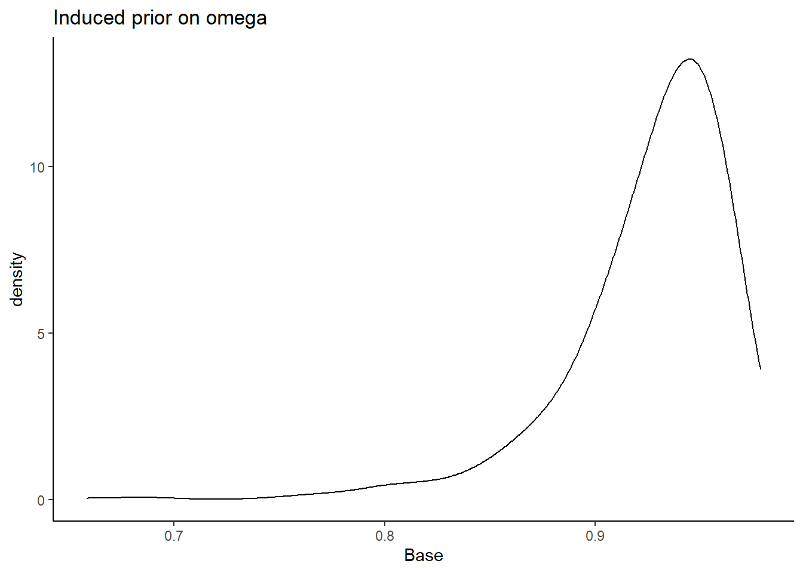

Study 4: Extroversion Data Analysis
Full Model Prior-Posterior Sensitivity Part 1
R. Noah Padgett
2022-01-17
Last updated: 2022-01-20
Checks: 4 2
Knit directory: Padgett-Dissertation/
This reproducible R Markdown analysis was created with workflowr (version 1.6.2). The Checks tab describes the reproducibility checks that were applied when the results were created. The Past versions tab lists the development history.
Great job! The global environment was empty. Objects defined in the global environment can affect the analysis in your R Markdown file in unknown ways. For reproduciblity it’s best to always run the code in an empty environment.
The command set.seed(20210401) was run prior to running the code in the R Markdown file. Setting a seed ensures that any results that rely on randomness, e.g. subsampling or permutations, are reproducible.
Great job! Recording the operating system, R version, and package versions is critical for reproducibility.
- model4-alt-A
- model4-alt-B
- model4-alt-C
- model4-alt-D
- model4-alt-E
- model4-alt-F
- model4-base
- model4-code
- model4-post-prior-comp
- model4-spec-alt-a
- model4-spec-alt-b
- model4-spec-alt-c
- model4-spec-alt-d
- model4-spec-alt-e
- model4-spec-alt-f
- model4-spec-compare
- model4-spec-lambda-comp
- model4-spec-lambda-std-comp
To ensure reproducibility of the results, delete the cache directory study4_posterior_sensitivity_analysis_part1_cache and re-run the analysis. To have workflowr automatically delete the cache directory prior to building the file, set delete_cache = TRUE when running wflow_build() or wflow_publish().
Great job! Using relative paths to the files within your workflowr project makes it easier to run your code on other machines.
Tracking code development and connecting the code version to the results is critical for reproducibility. To start using Git, open the Terminal and type git init in your project directory.
This project is not being versioned with Git. To obtain the full reproducibility benefits of using workflowr, please see ?wflow_start.
# Load packages & utility functions
source("code/load_packages.R")
source("code/load_utility_functions.R")
# environment options
options(scipen = 999, digits=3)
library(diffIRT)
data("extraversion")
mydata <- na.omit(extraversion)
# model constants
# Save parameters
jags.params <- c("tau",
"lambda","lambda.std",
"theta",
"icept",
"prec",
"prec.s",
"sigma.ts",
"rho",
"reli.omega")
#data
jags.data <- list(
y = mydata[,1:10],
lrt = mydata[,11:20],
N = nrow(mydata),
nit = 10,
ncat = 2
)Model 4: Full IFA with Misclassification
The code below contains the specification of the full model that has been used throughout this project.
cat(read_file(paste0(w.d, "/code/study_4/model_4.txt")))model {
### Model
for(p in 1:N){
for(i in 1:nit){
# data model
y[p,i] ~ dbern(omega[p,i,2])
# LRV
ystar[p,i] ~ dnorm(lambda[i]*eta[p], 1)
# Pr(nu = 2)
pi[p,i,2] = phi(ystar[p,i] - tau[i,1])
# Pr(nu = 1)
pi[p,i,1] = 1 - phi(ystar[p,i] - tau[i,1])
# log-RT model
dev[p,i]<-lambda[i]*(eta[p] - tau[i,1])
mu.lrt[p,i] <- icept[i] - speed[p] - rho * abs(dev[p,i])
lrt[p,i] ~ dnorm(mu.lrt[p,i], prec[i])
# MISCLASSIFICATION MODEL
for(c in 1:ncat){
# generate informative prior for misclassificaiton
# parameters based on RT
for(ct in 1:ncat){
alpha[p,i,ct,c] <- ifelse(c == ct,
ilogit(lrt[p,i]),
(1/(ncat-1))*(1-ilogit(lrt[p,i]))
)
}
# sample misclassification parameters using the informative priors
gamma[p,i,c,1:ncat] ~ ddirch(alpha[p,i,c,1:ncat])
# observed category prob (Pr(y=c))
omega[p,i, c] = gamma[p,i,c,1]*pi[p,i,1] +
gamma[p,i,c,2]*pi[p,i,2]
}
}
}
### Priors
# person parameters
for(p in 1:N){
eta[p] ~ dnorm(0, 1) # latent ability
speed[p]~dnorm(sigma.ts*eta[p],prec.s) # latent speed
}
sigma.ts ~ dnorm(0, 0.1)
prec.s ~ dgamma(.1,.1)
# transformations
sigma.t = pow(prec.s, -1) + pow(sigma.ts, 2) # speed variance
cor.ts = sigma.ts/(pow(sigma.t,0.5)) # LV correlation
for(i in 1:nit){
# lrt parameters
icept[i]~dnorm(0,.1)
prec[i]~dgamma(.1,.1)
# Thresholds
tau[i, 1] ~ dnorm(0.0,0.1)
# loadings
lambda[i] ~ dnorm(0, .44)T(0,)
# LRV total variance
# total variance = residual variance + fact. Var.
theta[i] = 1 + pow(lambda[i],2)
# standardized loading
lambda.std[i] = lambda[i]/pow(theta[i],0.5)
}
rho~dnorm(0,.1)I(0,)
# compute omega
lambda_sum[1] = lambda[1]
for(i in 2:nit){
#lambda_sum (sum factor loadings)
lambda_sum[i] = lambda_sum[i-1]+lambda[i]
}
reli.omega = (pow(lambda_sum[nit],2))/(pow(lambda_sum[nit],2)+nit)
}# omega simulator
prior_omega <- function(lambda, theta){
(sum(lambda)**2)/(sum(lambda)**2 + sum(theta))
}
# induced prior on omega is:
prior_lambda <- function(n){
y <- rep(-1, n)
for(i in 1:n){
while(y[i] < 0){
y[i] <- rnorm(1, 0, sqrt(1/.44))
}
}
return(y)
}
nsim=1000
sim_omega <- numeric(nsim)
for(i in 1:nsim){
lam_vec <- prior_lambda(10)
tht_vec <- rep(1, 10)
sim_omega[i] <- prior_omega(lam_vec, tht_vec)
}
prior_data <- data.frame(Base=sim_omega)
ggplot(prior_data, aes(x=Base))+
geom_density(adjust=2)+
labs(title="Induced prior on omega")+
theme_classic()
I will test the various different prior structures. The prior structure is very complex. There are many moving pieces in this posterior distribution and for this prior-posterior sensitivity analysis we will focus on the effects of prior specification on the posterior of \(\omega\) only.
The pieces are most likely to effect the posterior of \(\omega\) are the priors for the
factor loadings (\(\lambda\))
misclassification rates (\(\gamma\)) by tuning of misclassification
For each specification below, we will show the induced prior on \(\omega\).
Factor Loading Prior Alternatives
For the following investigations, the prior for the tuning parameter of misclassification rates is held constant at 1. The following major section will test how the tuning paramter incluences the results as well.
Alternative A
In Alternative A, the prior for the factor loadings are made more diffuse. \[\lambda \sim N^+(0,.44) \Longrightarrow \lambda \sim N^+(0,.01)\] and remember, the variability is parameterized as the precision and not variance.
prior_lambda_A <- function(n){
y <- rep(-1, n)
for(i in 1:n){
while(y[i] < 0){
y[i] <- rnorm(1, 0, sqrt(1/.01))
}
}
return(y)
}
nsim=1000
sim_omega <- numeric(nsim)
for(i in 1:nsim){
lam_vec <- prior_lambda(10)
tht_vec <- rep(1, 10)
sim_omega[i] <- prior_omega(lam_vec, tht_vec)
}
prior_data$Alt_A <- sim_omega
ggplot(prior_data, aes(x=Alt_A))+
geom_density(adjust=2)+
labs(title="Induced prior on omega")+
theme_classic()
Alternative B
In Alternative B, the prior for the factor loadings are made more informative and centered on more commonly estimated values of loadings. \[\lambda \sim N^+(0,.44) \Longrightarrow \lambda \sim N^+(1,2)\]
prior_lambda_B <- function(n){
y <- rep(-1, n)
for(i in 1:n){
while(y[i] < 0){
y[i] <- rnorm(1, 0, sqrt(1/2))
}
}
return(y)
}
sim_omega <- numeric(nsim)
for(i in 1:nsim){
lam_vec <- prior_lambda_B(10)
tht_vec <- rep(1, 10)
sim_omega[i] <- prior_omega(lam_vec, tht_vec)
}
prior_data$Alt_B <- sim_omega
ggplot(prior_data, aes(x=Alt_B))+
geom_density(adjust=2)+
labs(title="Induced prior on omega")+
theme_classic()Alternative C
In Alternative C, the prior for the factor loadings are made non-sign controlled. Meaning that the orientation indeterminancy is not fixed by constraining the loadings to be positive. \[\lambda \sim N^+(0,.44) \Longrightarrow \lambda \sim N(0,.44)\]
prior_lambda_C <- function(n){
rnorm(n, 0, sqrt(1/.44))
}
sim_omega <- numeric(nsim)
for(i in 1:nsim){
lam_vec <- prior_lambda_C(10)
tht_vec <- rep(1, 10)
sim_omega[i] <- prior_omega(lam_vec, tht_vec)
}
prior_data$Alt_C <- sim_omega
ggplot(prior_data, aes(x=Alt_C))+
geom_density(adjust=2)+
labs(title="Induced prior on omega")+
theme_classic()Alternative D
In Alternative D, the prior for the factor loadings are made non-sign controlled and relatively mor informative. Meaning that the orientation indeterminancy is not fixed by constraining the loadings to be positive and there is less uncertainty. The main aim of this specification is to test whether a completely different shaped induced prior on omega influences the results. \[\lambda \sim N^+(0,.44) \Longrightarrow \lambda \sim N(0,10)\]
prior_lambda_D <- function(n){
rnorm(n, 0, sqrt(1/10))
}
sim_omega <- numeric(nsim)
for(i in 1:nsim){
lam_vec <- prior_lambda_D(10)
tht_vec <- rep(1, 10)
sim_omega[i] <- prior_omega(lam_vec, tht_vec)
}
prior_data$Alt_D <- sim_omega
ggplot(prior_data, aes(x=Alt_D))+
geom_density(adjust=2)+
labs(title="Induced prior on omega")+
theme_classic()
Alternative E
In Alternative E, the prior for the factor loadings are made with sign controlled and relatively more informative. Meaning that the orientation indeterminancy is fixed by constraining the loadings to be positive and there is less uncertainty. The main aim of this specification is to test whether a completely different shaped induced prior on omega influences the results. \[\lambda \sim N^+(0,.44) \Longrightarrow \lambda \sim N^+(0,5)\]
prior_lambda_E <- function(n){
y <- rep(-1, n)
for(i in 1:n){
while(y[i] < 0){
y[i] <- rnorm(1, 0, sqrt(1/5))
}
}
return(y)
}
sim_omega <- numeric(nsim)
for(i in 1:nsim){
lam_vec <- prior_lambda_E(10)
tht_vec <- rep(1, 10)
sim_omega[i] <- prior_omega(lam_vec, tht_vec)
}
prior_data$Alt_E <- sim_omega
ggplot(prior_data, aes(x=Alt_E))+
geom_density(adjust=2)+
labs(title="Induced prior on omega")+
theme_classic()Comparing A-E
plot.prior <- prior_data %>%
pivot_longer(
cols=everything(),
names_to="Prior",
values_to="omega"
) %>%
mutate(
Prior = factor(Prior, levels=c("Base", "Alt_A", "Alt_B", "Alt_C", "Alt_D", "Alt_E"))
)
cols=c("Base"="black", "Alt_A"="#009e73", "Alt_B"="#E69F00", "Alt_C"="#CC79A7","Alt_D"="#56B4E9", "Alt_E"="#f0e442") #"#56B4E9", "#E69F00" "#CC79A7", "#d55e00", "#f0e442, " #0072b2"
p <- ggplot(plot.prior, aes(x=omega, color=Prior, fill=Prior))+
geom_density(adjust=2, alpha=0.1)+
scale_color_manual(values=cols, name="Prior")+
scale_fill_manual(values=cols, name="Prior")+
theme_bw()+
theme(
panel.grid = element_blank()
)
p
Estimate Models
Base Prior
# Save parameters
jags.params <- c("tau",
"lambda","lambda.std",
"theta",
"icept",
"prec",
"prec.s",
"sigma.ts", "cor.ts",
"rho",
"reli.omega")
# initial-values
jags.inits <- function(){
list(
"tau"=matrix(c(-0.64, -0.09, -1.05, -1.42, -0.11, -1.29, -1.59, -1.81, -0.93, -1.11), ncol=1, nrow=10),
"lambda"=rep(0.7,10),
"eta"=rnorm(142),
"speed"=rnorm(142),
"ystar"=matrix(c(0.7*rep(rnorm(142),10)), ncol=10),
"rho"=0.1,
"icept"=rep(0, 10),
"prec.s"=10,
"prec"=rep(4, 10),
"sigma.ts"=0.1
)
}
jags.data <- list(
y = mydata[,1:10],
lrt = mydata[,11:20],
N = nrow(mydata),
nit = 10,
ncat = 2
)
# Run model
fit.base_prior <- R2jags::jags(
model = paste0(w.d, "/code/study_4/model_4.txt"),
parameters.to.save = jags.params,
inits = jags.inits,
data = jags.data,
n.chains = 4,
n.burnin = 5000,
n.iter = 10000
)module glm loadedCompiling model graph
Resolving undeclared variables
Allocating nodes
Graph information:
Observed stochastic nodes: 2840
Unobserved stochastic nodes: 4587
Total graph size: 43537
Initializing modelprint(fit.base_prior, width=1000)Inference for Bugs model at "C:/Users/noahp/Documents/GitHub/Padgett-Dissertation/code/study_4/model_4.txt", fit using jags,
4 chains, each with 10000 iterations (first 5000 discarded), n.thin = 5
n.sims = 4000 iterations saved
mu.vect sd.vect 2.5% 25% 50% 75% 97.5% Rhat n.eff
cor.ts 0.296 0.155 -0.018 0.194 0.299 0.400 0.597 1.00 820
icept[1] 1.672 0.150 1.438 1.568 1.647 1.754 2.019 1.04 88
icept[2] 1.463 0.078 1.324 1.409 1.459 1.510 1.633 1.05 58
icept[3] 1.663 0.316 1.214 1.434 1.597 1.833 2.483 1.03 110
icept[4] 1.300 0.269 0.972 1.114 1.239 1.416 1.981 1.02 4000
icept[5] 1.365 0.081 1.229 1.311 1.359 1.410 1.560 1.06 53
icept[6] 1.456 0.184 1.213 1.327 1.415 1.546 1.929 1.02 180
icept[7] 1.324 0.184 1.106 1.201 1.278 1.403 1.749 1.04 160
icept[8] 1.270 0.204 1.028 1.129 1.214 1.356 1.777 1.03 87
icept[9] 1.925 0.165 1.706 1.817 1.893 2.000 2.350 1.02 490
icept[10] 1.460 0.265 1.066 1.266 1.413 1.609 2.068 1.02 180
lambda[1] 1.585 0.672 0.399 1.121 1.527 1.996 3.012 1.02 140
lambda[2] 2.139 0.812 0.756 1.512 2.107 2.700 3.835 1.09 43
lambda[3] 2.358 0.670 1.160 1.907 2.317 2.768 3.910 1.07 55
lambda[4] 1.380 0.763 0.089 0.810 1.352 1.928 2.936 1.09 62
lambda[5] 1.115 0.664 0.162 0.611 0.975 1.512 2.705 1.07 41
lambda[6] 0.695 0.452 0.038 0.338 0.638 0.971 1.761 1.01 300
lambda[7] 0.613 0.501 0.025 0.242 0.492 0.838 1.830 1.01 190
lambda[8] 0.650 0.474 0.028 0.266 0.563 0.947 1.717 1.02 130
lambda[9] 1.251 0.529 0.327 0.885 1.216 1.547 2.490 1.03 170
lambda[10] 2.085 0.622 0.927 1.640 2.060 2.514 3.355 1.06 65
lambda.std[1] 0.794 0.149 0.371 0.746 0.837 0.894 0.949 1.04 210
lambda.std[2] 0.870 0.103 0.603 0.834 0.903 0.938 0.968 1.12 50
lambda.std[3] 0.904 0.064 0.757 0.886 0.918 0.941 0.969 1.19 110
lambda.std[4] 0.716 0.234 0.089 0.629 0.804 0.888 0.947 1.12 52
lambda.std[5] 0.658 0.214 0.160 0.521 0.698 0.834 0.938 1.04 70
lambda.std[6] 0.503 0.237 0.038 0.320 0.538 0.697 0.870 1.01 400
lambda.std[7] 0.444 0.250 0.025 0.235 0.442 0.642 0.878 1.01 320
lambda.std[8] 0.471 0.252 0.028 0.257 0.491 0.688 0.864 1.02 150
lambda.std[9] 0.733 0.154 0.311 0.663 0.772 0.840 0.928 1.06 150
lambda.std[10] 0.880 0.073 0.680 0.854 0.900 0.929 0.958 1.08 65
prec[1] 1.778 0.219 1.371 1.627 1.765 1.918 2.237 1.00 4000
prec[2] 3.521 0.471 2.666 3.190 3.497 3.834 4.514 1.01 430
prec[3] 4.289 0.603 3.248 3.866 4.251 4.673 5.605 1.00 1500
prec[4] 2.509 0.323 1.922 2.287 2.493 2.715 3.176 1.00 4000
prec[5] 2.850 0.364 2.184 2.597 2.834 3.090 3.587 1.00 2100
prec[6] 3.015 0.386 2.319 2.749 2.999 3.254 3.841 1.00 3100
prec[7] 4.954 0.652 3.780 4.477 4.922 5.380 6.282 1.00 4000
prec[8] 3.893 0.507 2.975 3.529 3.863 4.225 4.961 1.00 4000
prec[9] 2.570 0.329 1.956 2.344 2.560 2.781 3.254 1.00 4000
prec[10] 6.730 1.006 4.945 6.003 6.672 7.379 8.841 1.00 880
prec.s 11.147 2.329 7.577 9.545 10.843 12.343 16.757 1.01 500
reli.omega 0.946 0.021 0.892 0.938 0.951 0.960 0.971 1.07 100
rho 0.059 0.023 0.017 0.043 0.058 0.074 0.107 1.04 64
sigma.ts 0.096 0.051 -0.006 0.062 0.095 0.129 0.199 1.00 1000
tau[1,1] -1.777 0.532 -3.000 -2.089 -1.694 -1.393 -0.930 1.01 270
tau[2,1] -0.171 0.392 -0.920 -0.434 -0.176 0.083 0.596 1.00 1400
tau[3,1] -3.849 0.962 -6.153 -4.409 -3.735 -3.179 -2.289 1.05 79
tau[4,1] -3.442 0.999 -5.822 -3.991 -3.276 -2.722 -1.972 1.00 1100
tau[5,1] -0.395 0.390 -1.270 -0.631 -0.364 -0.130 0.311 1.07 43
tau[6,1] -4.799 1.498 -8.285 -5.684 -4.540 -3.684 -2.570 1.02 110
tau[7,1] -5.023 1.592 -8.835 -5.891 -4.735 -3.853 -2.791 1.01 260
tau[8,1] -5.088 1.471 -8.514 -5.888 -4.840 -4.018 -2.979 1.00 1800
tau[9,1] -2.493 0.660 -4.105 -2.857 -2.379 -2.015 -1.513 1.01 220
tau[10,1] -3.891 0.982 -6.009 -4.482 -3.796 -3.178 -2.294 1.05 72
theta[1] 3.962 2.397 1.159 2.257 3.331 4.983 10.071 1.03 120
theta[2] 6.236 3.756 1.571 3.285 5.438 8.289 15.707 1.07 46
theta[3] 7.006 3.430 2.345 4.636 6.370 8.664 16.286 1.06 50
theta[4] 3.487 2.378 1.008 1.655 2.829 4.718 9.622 1.03 160
theta[5] 2.684 1.913 1.026 1.373 1.951 3.286 8.316 1.12 27
theta[6] 1.687 0.816 1.001 1.114 1.407 1.943 4.101 1.03 130
theta[7] 1.627 1.041 1.001 1.058 1.242 1.702 4.350 1.07 64
theta[8] 1.647 0.862 1.001 1.071 1.317 1.897 3.949 1.02 120
theta[9] 2.845 1.553 1.107 1.783 2.479 3.394 7.202 1.02 230
theta[10] 5.733 2.728 1.859 3.690 5.244 7.318 12.255 1.05 70
deviance 3213.447 45.164 3128.145 3182.834 3213.026 3243.462 3304.033 1.03 97
For each parameter, n.eff is a crude measure of effective sample size,
and Rhat is the potential scale reduction factor (at convergence, Rhat=1).
DIC info (using the rule, pD = var(deviance)/2)
pD = 988.7 and DIC = 4202.1
DIC is an estimate of expected predictive error (lower deviance is better).Alt Prior A
# alt A
fit.prior_a <- R2jags::jags(
model = paste0(w.d, "/code/study_4/model_4A.txt"),
parameters.to.save = jags.params,
inits = jags.inits,
data = jags.data,
n.chains = 4,
n.burnin = 5000,
n.iter = 10000
)Compiling model graph
Resolving undeclared variables
Allocating nodes
Graph information:
Observed stochastic nodes: 2840
Unobserved stochastic nodes: 4587
Total graph size: 43537
Initializing modelprint(fit.prior_a, width=1000)Inference for Bugs model at "C:/Users/noahp/Documents/GitHub/Padgett-Dissertation/code/study_4/model_4A.txt", fit using jags,
4 chains, each with 10000 iterations (first 5000 discarded), n.thin = 5
n.sims = 4000 iterations saved
mu.vect sd.vect 2.5% 25% 50% 75% 97.5% Rhat n.eff
cor.ts 0.348 0.168 -0.053 0.260 0.373 0.466 0.610 1.34 13
icept[1] 1.808 0.379 1.441 1.566 1.682 1.942 2.890 1.22 21
icept[2] 1.507 0.090 1.347 1.447 1.502 1.563 1.700 1.07 39
icept[3] 1.643 0.356 1.151 1.345 1.596 1.863 2.456 1.19 19
icept[4] 1.483 0.531 0.982 1.122 1.282 1.696 2.901 1.34 12
icept[5] 1.365 0.082 1.224 1.309 1.356 1.409 1.559 1.07 42
icept[6] 1.389 0.176 1.195 1.285 1.345 1.439 1.897 1.28 19
icept[7] 1.225 0.097 1.093 1.165 1.207 1.264 1.469 1.14 30
icept[8] 1.188 0.164 1.009 1.091 1.144 1.228 1.701 1.26 19
icept[9] 1.904 0.177 1.679 1.786 1.864 1.974 2.380 1.12 30
icept[10] 1.319 0.222 1.007 1.153 1.283 1.434 1.865 1.16 22
lambda[1] 3.670 1.937 0.935 2.052 3.271 5.149 7.557 1.04 120
lambda[2] 9.413 4.039 1.990 5.738 10.450 12.538 15.521 3.17 5
lambda[3] 4.453 1.471 2.010 3.388 4.173 5.627 7.563 1.23 16
lambda[4] 3.359 1.673 0.804 2.022 3.166 4.560 7.045 1.24 16
lambda[5] 2.808 1.982 0.451 1.218 2.153 4.118 7.148 1.66 8
lambda[6] 1.023 0.740 0.043 0.428 0.870 1.508 2.697 1.01 680
lambda[7] 0.704 0.517 0.030 0.290 0.611 1.016 1.931 1.01 220
lambda[8] 0.863 0.718 0.024 0.299 0.658 1.262 2.578 1.02 130
lambda[9] 2.341 1.260 0.623 1.402 2.094 2.964 5.662 1.52 9
lambda[10] 3.484 1.496 1.422 2.383 3.302 4.279 7.597 1.80 7
lambda.std[1] 0.923 0.089 0.683 0.899 0.956 0.982 0.991 1.12 72
lambda.std[2] 0.983 0.031 0.894 0.985 0.995 0.997 0.998 1.79 8
lambda.std[3] 0.966 0.026 0.895 0.959 0.972 0.985 0.991 1.18 22
lambda.std[4] 0.916 0.106 0.627 0.896 0.954 0.977 0.990 1.27 34
lambda.std[5] 0.847 0.164 0.411 0.773 0.907 0.972 0.990 1.23 19
lambda.std[6] 0.596 0.270 0.043 0.393 0.656 0.833 0.938 1.01 500
lambda.std[7] 0.492 0.257 0.030 0.279 0.522 0.713 0.888 1.01 260
lambda.std[8] 0.526 0.283 0.024 0.287 0.550 0.784 0.932 1.02 170
lambda.std[9] 0.864 0.118 0.529 0.814 0.902 0.948 0.985 1.23 17
lambda.std[10] 0.940 0.054 0.818 0.922 0.957 0.974 0.991 1.42 13
prec[1] 1.761 0.216 1.363 1.613 1.754 1.898 2.215 1.00 2100
prec[2] 3.575 0.481 2.678 3.237 3.554 3.883 4.589 1.02 150
prec[3] 4.187 0.573 3.175 3.792 4.147 4.534 5.441 1.01 440
prec[4] 2.521 0.319 1.945 2.291 2.503 2.723 3.184 1.01 180
prec[5] 2.874 0.375 2.184 2.611 2.854 3.112 3.660 1.00 4000
prec[6] 3.035 0.385 2.325 2.766 3.017 3.278 3.845 1.00 4000
prec[7] 4.926 0.665 3.714 4.450 4.901 5.363 6.323 1.00 2400
prec[8] 3.894 0.518 2.974 3.531 3.861 4.224 5.003 1.00 2500
prec[9] 2.568 0.328 1.976 2.343 2.547 2.772 3.276 1.00 890
prec[10] 6.484 0.912 4.893 5.834 6.413 7.086 8.396 1.00 1100
prec.s 10.729 1.989 7.480 9.327 10.538 11.822 15.310 1.04 71
reli.omega 0.988 0.008 0.967 0.985 0.990 0.994 0.996 1.90 7
rho 0.022 0.015 0.003 0.012 0.018 0.029 0.063 1.50 9
sigma.ts 0.118 0.059 -0.018 0.085 0.123 0.158 0.214 1.32 14
tau[1,1] -3.174 1.484 -6.532 -4.096 -2.829 -1.999 -1.170 1.02 210
tau[2,1] 0.237 0.719 -0.801 -0.178 0.084 0.486 2.234 1.18 21
tau[3,1] -5.408 1.509 -8.801 -6.331 -5.346 -4.301 -2.812 1.19 19
tau[4,1] -5.250 1.736 -9.231 -6.315 -5.030 -3.888 -2.592 1.07 51
tau[5,1] -0.461 0.552 -1.660 -0.778 -0.431 -0.128 0.622 1.08 74
tau[6,1] -5.088 1.638 -8.867 -6.082 -4.810 -3.869 -2.674 1.02 110
tau[7,1] -4.837 1.592 -8.702 -5.732 -4.564 -3.690 -2.568 1.03 76
tau[8,1] -5.269 1.535 -8.892 -6.165 -5.046 -4.129 -2.978 1.01 510
tau[9,1] -3.219 1.204 -6.500 -3.723 -2.960 -2.373 -1.632 1.39 12
tau[10,1] -4.837 1.474 -8.446 -5.596 -4.667 -3.803 -2.571 1.45 10
theta[1] 18.224 16.416 1.874 5.210 11.697 27.509 58.106 1.03 150
theta[2] 105.912 71.201 4.960 33.926 110.206 158.195 241.890 3.24 5
theta[3] 22.996 14.116 5.040 12.478 18.417 32.661 58.203 1.23 16
theta[4] 15.084 13.390 1.646 5.089 11.021 21.790 50.637 1.23 16
theta[5] 12.812 15.057 1.203 2.483 5.635 17.961 52.098 1.89 7
theta[6] 2.594 2.045 1.002 1.183 1.757 3.274 8.276 1.01 1500
theta[7] 1.762 1.016 1.001 1.084 1.374 2.032 4.731 1.02 160
theta[8] 2.260 1.869 1.001 1.089 1.433 2.592 7.647 1.04 88
theta[9] 8.068 7.941 1.388 2.967 5.387 9.785 33.059 1.64 8
theta[10] 15.377 13.640 3.022 6.677 11.902 19.308 58.710 1.86 7
deviance 3141.416 49.058 3045.607 3108.253 3140.948 3174.565 3236.748 1.28 14
For each parameter, n.eff is a crude measure of effective sample size,
and Rhat is the potential scale reduction factor (at convergence, Rhat=1).
DIC info (using the rule, pD = var(deviance)/2)
pD = 916.1 and DIC = 4057.5
DIC is an estimate of expected predictive error (lower deviance is better).Alt Prior B
# alt B
fit.prior_b <- R2jags::jags(
model = paste0(w.d, "/code/study_4/model_4B.txt"),
parameters.to.save = jags.params,
inits = jags.inits,
data = jags.data,
n.chains = 4,
n.burnin = 5000,
n.iter = 10000
)Compiling model graph
Resolving undeclared variables
Allocating nodes
Graph information:
Observed stochastic nodes: 2840
Unobserved stochastic nodes: 4587
Total graph size: 43536
Initializing modelprint(fit.prior_b, width=1000)Inference for Bugs model at "C:/Users/noahp/Documents/GitHub/Padgett-Dissertation/code/study_4/model_4B.txt", fit using jags,
4 chains, each with 10000 iterations (first 5000 discarded), n.thin = 5
n.sims = 4000 iterations saved
mu.vect sd.vect 2.5% 25% 50% 75% 97.5% Rhat n.eff
cor.ts 0.305 0.183 -0.088 0.189 0.315 0.433 0.641 1.03 100
icept[1] 1.673 0.130 1.459 1.583 1.659 1.747 1.968 1.03 130
icept[2] 1.444 0.074 1.315 1.394 1.439 1.489 1.605 1.02 120
icept[3] 1.581 0.282 1.184 1.372 1.529 1.730 2.260 1.05 56
icept[4] 1.293 0.217 0.992 1.131 1.246 1.423 1.808 1.04 66
icept[5] 1.377 0.082 1.243 1.323 1.370 1.418 1.573 1.05 87
icept[6] 1.551 0.261 1.238 1.372 1.490 1.656 2.220 1.02 230
icept[7] 1.374 0.198 1.121 1.236 1.331 1.462 1.923 1.01 350
icept[8] 1.361 0.256 1.059 1.181 1.291 1.463 2.065 1.02 180
icept[9] 1.934 0.140 1.720 1.836 1.917 2.006 2.263 1.03 99
icept[10] 1.423 0.246 1.060 1.246 1.379 1.562 1.993 1.02 190
lambda[1] 1.445 0.469 0.557 1.117 1.435 1.743 2.404 1.04 110
lambda[2] 1.512 0.479 0.639 1.169 1.498 1.821 2.488 1.02 160
lambda[3] 1.938 0.471 1.053 1.618 1.909 2.258 2.902 1.03 90
lambda[4] 1.192 0.586 0.148 0.737 1.166 1.635 2.297 1.08 44
lambda[5] 1.120 0.529 0.221 0.731 1.069 1.441 2.297 1.02 130
lambda[6] 0.801 0.443 0.078 0.458 0.784 1.091 1.748 1.01 630
lambda[7] 0.700 0.411 0.043 0.394 0.674 0.951 1.635 1.00 2400
lambda[8] 0.790 0.457 0.075 0.446 0.738 1.089 1.790 1.02 130
lambda[9] 1.201 0.428 0.365 0.904 1.186 1.490 2.053 1.05 120
lambda[10] 1.796 0.450 0.940 1.479 1.797 2.099 2.709 1.04 78
lambda.std[1] 0.792 0.112 0.487 0.745 0.820 0.867 0.923 1.08 120
lambda.std[2] 0.805 0.106 0.538 0.760 0.832 0.877 0.928 1.05 210
lambda.std[3] 0.874 0.058 0.725 0.851 0.886 0.914 0.945 1.03 110
lambda.std[4] 0.696 0.205 0.147 0.593 0.759 0.853 0.917 1.07 64
lambda.std[5] 0.687 0.181 0.216 0.590 0.730 0.822 0.917 1.02 180
lambda.std[6] 0.564 0.219 0.078 0.417 0.617 0.737 0.868 1.00 1000
lambda.std[7] 0.517 0.221 0.043 0.366 0.559 0.689 0.853 1.00 4000
lambda.std[8] 0.555 0.223 0.075 0.407 0.594 0.737 0.873 1.01 190
lambda.std[9] 0.731 0.141 0.343 0.671 0.765 0.830 0.899 1.10 160
lambda.std[10] 0.857 0.069 0.685 0.828 0.874 0.903 0.938 1.10 90
prec[1] 1.782 0.224 1.376 1.630 1.767 1.926 2.256 1.00 4000
prec[2] 3.499 0.453 2.677 3.189 3.486 3.780 4.428 1.00 1600
prec[3] 4.282 0.605 3.213 3.859 4.237 4.669 5.602 1.00 770
prec[4] 2.493 0.317 1.938 2.266 2.477 2.694 3.152 1.00 3300
prec[5] 2.851 0.370 2.189 2.600 2.831 3.086 3.647 1.00 4000
prec[6] 3.005 0.378 2.323 2.751 2.980 3.246 3.804 1.00 4000
prec[7] 4.933 0.656 3.766 4.470 4.900 5.352 6.311 1.00 1200
prec[8] 3.884 0.513 2.950 3.526 3.859 4.216 4.982 1.00 4000
prec[9] 2.568 0.326 1.986 2.341 2.550 2.783 3.239 1.00 4000
prec[10] 6.745 1.023 5.002 6.038 6.668 7.352 8.999 1.00 1100
prec.s 11.627 2.624 7.642 9.852 11.282 13.064 17.667 1.01 180
reli.omega 0.937 0.017 0.900 0.927 0.939 0.950 0.961 1.03 91
rho 0.068 0.031 0.018 0.047 0.065 0.085 0.143 1.04 79
sigma.ts 0.098 0.060 -0.030 0.059 0.099 0.139 0.216 1.03 99
tau[1,1] -1.708 0.481 -2.819 -2.005 -1.666 -1.363 -0.906 1.01 330
tau[2,1] -0.109 0.341 -0.776 -0.337 -0.110 0.121 0.574 1.02 170
tau[3,1] -3.358 0.812 -5.214 -3.859 -3.253 -2.779 -2.038 1.05 57
tau[4,1] -3.536 1.099 -6.468 -4.040 -3.346 -2.797 -2.012 1.06 80
tau[5,1] -0.361 0.370 -1.145 -0.590 -0.333 -0.109 0.301 1.06 52
tau[6,1] -5.142 1.554 -8.748 -6.050 -4.896 -4.004 -2.851 1.01 370
tau[7,1] -4.687 1.483 -8.332 -5.481 -4.388 -3.606 -2.614 1.01 260
tau[8,1] -5.270 1.493 -8.757 -6.109 -5.016 -4.182 -3.098 1.00 1400
tau[9,1] -2.417 0.594 -3.773 -2.732 -2.348 -1.997 -1.478 1.01 850
tau[10,1] -3.578 0.855 -5.555 -4.061 -3.474 -2.974 -2.200 1.01 1200
theta[1] 3.308 1.443 1.311 2.248 3.060 4.038 6.779 1.03 110
theta[2] 3.515 1.524 1.408 2.367 3.245 4.317 7.188 1.02 150
theta[3] 4.976 1.881 2.109 3.618 4.644 6.101 9.420 1.03 90
theta[4] 2.765 1.502 1.022 1.543 2.360 3.674 6.278 1.09 33
theta[5] 2.534 1.373 1.049 1.534 2.143 3.076 6.274 1.03 110
theta[6] 1.837 0.831 1.006 1.210 1.615 2.189 4.056 1.02 200
theta[7] 1.659 0.715 1.002 1.155 1.454 1.904 3.672 1.01 270
theta[8] 1.833 0.876 1.006 1.199 1.544 2.186 4.205 1.05 65
theta[9] 2.625 1.071 1.133 1.817 2.407 3.221 5.213 1.03 100
theta[10] 4.430 1.655 1.883 3.187 4.228 5.408 8.337 1.03 80
deviance 3226.313 44.012 3141.181 3196.917 3224.922 3255.712 3315.678 1.01 180
For each parameter, n.eff is a crude measure of effective sample size,
and Rhat is the potential scale reduction factor (at convergence, Rhat=1).
DIC info (using the rule, pD = var(deviance)/2)
pD = 953.3 and DIC = 4179.6
DIC is an estimate of expected predictive error (lower deviance is better).Alt Prior C
# alt C
fit.prior_c <- R2jags::jags(
model = paste0(w.d, "/code/study_4/model_4C.txt"),
parameters.to.save = jags.params,
inits = jags.inits,
data = jags.data,
n.chains = 4,
n.burnin = 5000,
n.iter = 10000
)Compiling model graph
Resolving undeclared variables
Allocating nodes
Graph information:
Observed stochastic nodes: 2840
Unobserved stochastic nodes: 4587
Total graph size: 43537
Initializing modelprint(fit.prior_c, width=1000)Inference for Bugs model at "C:/Users/noahp/Documents/GitHub/Padgett-Dissertation/code/study_4/model_4C.txt", fit using jags,
4 chains, each with 10000 iterations (first 5000 discarded), n.thin = 5
n.sims = 4000 iterations saved
mu.vect sd.vect 2.5% 25% 50% 75% 97.5% Rhat n.eff
cor.ts 0.289 0.175 -0.112 0.184 0.306 0.412 0.595 1.17 20
icept[1] 1.674 0.158 1.446 1.570 1.649 1.751 2.036 1.10 36
icept[2] 1.445 0.085 1.305 1.389 1.435 1.489 1.645 1.03 86
icept[3] 1.759 0.378 1.205 1.481 1.698 1.977 2.682 1.07 43
icept[4] 1.303 0.286 0.958 1.105 1.231 1.423 2.075 1.53 9
icept[5] 1.360 0.080 1.225 1.306 1.354 1.404 1.544 1.05 61
icept[6] 1.471 0.219 1.204 1.315 1.412 1.570 2.043 1.11 29
icept[7] 1.347 0.220 1.105 1.200 1.286 1.431 1.912 1.04 150
icept[8] 1.257 0.208 1.025 1.123 1.203 1.327 1.902 1.04 110
icept[9] 1.890 0.131 1.693 1.801 1.868 1.955 2.215 1.03 100
icept[10] 1.540 0.379 1.043 1.266 1.461 1.724 2.580 1.12 31
lambda[1] 1.606 0.626 0.528 1.172 1.552 1.982 3.001 1.06 49
lambda[2] 1.815 0.877 0.405 1.155 1.715 2.386 3.791 1.07 42
lambda[3] 2.614 0.658 1.417 2.139 2.566 3.070 3.983 1.04 71
lambda[4] 1.275 1.076 -0.994 0.579 1.320 1.988 3.427 1.41 10
lambda[5] 1.054 0.683 0.035 0.581 0.936 1.395 2.707 1.10 35
lambda[6] -0.251 0.894 -1.868 -0.850 -0.352 0.277 1.682 1.19 20
lambda[7] -0.021 0.766 -1.552 -0.592 0.044 0.556 1.310 1.09 35
lambda[8] 0.010 0.785 -1.546 -0.506 -0.005 0.542 1.588 1.08 43
lambda[9] 1.136 0.528 0.226 0.771 1.074 1.440 2.328 1.01 420
lambda[10] 2.223 0.730 0.942 1.707 2.196 2.643 3.829 1.08 39
lambda.std[1] 0.807 0.129 0.467 0.761 0.841 0.893 0.949 1.07 55
lambda.std[2] 0.813 0.155 0.375 0.756 0.864 0.922 0.967 1.13 31
lambda.std[3] 0.923 0.041 0.817 0.906 0.932 0.951 0.970 1.06 100
lambda.std[4] 0.602 0.444 -0.705 0.501 0.797 0.893 0.960 1.20 19
lambda.std[5] 0.631 0.239 0.035 0.502 0.683 0.813 0.938 1.08 42
lambda.std[6] -0.179 0.549 -0.882 -0.648 -0.332 0.267 0.860 1.19 19
lambda.std[7] 0.002 0.529 -0.841 -0.509 0.044 0.486 0.795 1.09 33
lambda.std[8] 0.005 0.518 -0.840 -0.452 -0.005 0.476 0.846 1.06 50
lambda.std[9] 0.694 0.180 0.221 0.611 0.732 0.821 0.919 1.03 260
lambda.std[10] 0.887 0.079 0.686 0.863 0.910 0.935 0.968 1.10 76
prec[1] 1.778 0.222 1.369 1.622 1.773 1.918 2.252 1.00 1300
prec[2] 3.513 0.476 2.669 3.178 3.486 3.814 4.525 1.00 1900
prec[3] 4.361 0.617 3.264 3.931 4.322 4.758 5.701 1.01 190
prec[4] 2.498 0.325 1.894 2.270 2.482 2.709 3.159 1.00 800
prec[5] 2.845 0.361 2.175 2.593 2.840 3.080 3.590 1.00 1800
prec[6] 3.026 0.384 2.308 2.761 3.013 3.280 3.804 1.00 4000
prec[7] 4.965 0.672 3.748 4.503 4.931 5.397 6.380 1.00 4000
prec[8] 3.893 0.516 2.959 3.537 3.862 4.220 4.976 1.00 1600
prec[9] 2.576 0.332 1.967 2.347 2.559 2.788 3.281 1.00 2600
prec[10] 6.833 1.096 5.016 6.067 6.725 7.490 9.301 1.01 480
prec.s 11.054 2.202 7.471 9.455 10.804 12.351 15.949 1.05 54
reli.omega 0.919 0.041 0.825 0.901 0.928 0.946 0.966 1.11 50
rho 0.059 0.027 0.013 0.040 0.056 0.074 0.113 1.09 49
sigma.ts 0.094 0.058 -0.036 0.058 0.097 0.134 0.201 1.17 21
tau[1,1] -1.832 0.647 -3.546 -2.124 -1.717 -1.396 -0.904 1.07 49
tau[2,1] -0.171 0.378 -0.901 -0.415 -0.184 0.066 0.612 1.02 160
tau[3,1] -4.142 1.058 -6.564 -4.762 -4.008 -3.375 -2.460 1.05 57
tau[4,1] -3.618 1.109 -6.287 -4.173 -3.434 -2.861 -2.048 1.14 26
tau[5,1] -0.379 0.399 -1.259 -0.617 -0.338 -0.108 0.319 1.05 68
tau[6,1] -4.500 1.563 -8.246 -5.381 -4.123 -3.338 -2.422 1.19 17
tau[7,1] -5.050 1.595 -8.982 -5.932 -4.745 -3.891 -2.770 1.00 1300
tau[8,1] -5.101 1.457 -8.561 -5.953 -4.857 -4.020 -2.938 1.01 340
tau[9,1] -2.358 0.634 -3.907 -2.687 -2.234 -1.919 -1.449 1.01 890
tau[10,1] -4.178 1.303 -7.059 -4.902 -4.018 -3.279 -2.157 1.08 60
theta[1] 3.972 2.261 1.279 2.374 3.410 4.928 10.006 1.06 47
theta[2] 5.064 3.804 1.164 2.334 3.942 6.692 15.372 1.09 36
theta[3] 8.264 3.576 3.007 5.574 7.585 10.426 16.866 1.04 67
theta[4] 3.783 3.084 1.006 1.516 2.834 4.953 12.745 1.45 10
theta[5] 2.577 2.044 1.007 1.338 1.875 2.947 8.330 1.10 34
theta[6] 1.862 1.102 1.001 1.107 1.451 2.186 5.042 1.08 38
theta[7] 1.587 0.709 1.001 1.084 1.324 1.826 3.573 1.02 140
theta[8] 1.616 0.905 1.000 1.066 1.276 1.754 4.277 1.05 77
theta[9] 2.570 1.400 1.055 1.594 2.153 3.073 6.420 1.01 480
theta[10] 6.473 3.576 1.887 3.913 5.823 7.986 15.659 1.09 34
deviance 3215.218 45.508 3129.335 3184.432 3214.355 3244.108 3308.816 1.08 36
For each parameter, n.eff is a crude measure of effective sample size,
and Rhat is the potential scale reduction factor (at convergence, Rhat=1).
DIC info (using the rule, pD = var(deviance)/2)
pD = 946.3 and DIC = 4161.5
DIC is an estimate of expected predictive error (lower deviance is better).Alt Prior D
# alt D
fit.prior_d <- R2jags::jags(
model = paste0(w.d, "/code/study_4/model_4D.txt"),
parameters.to.save = jags.params,
inits = jags.inits,
data = jags.data,
n.chains = 4,
n.burnin = 5000,
n.iter = 10000
)Compiling model graph
Resolving undeclared variables
Allocating nodes
Graph information:
Observed stochastic nodes: 2840
Unobserved stochastic nodes: 4587
Total graph size: 43537
Initializing modelprint(fit.prior_d, width=1000)Inference for Bugs model at "C:/Users/noahp/Documents/GitHub/Padgett-Dissertation/code/study_4/model_4D.txt", fit using jags,
4 chains, each with 10000 iterations (first 5000 discarded), n.thin = 5
n.sims = 4000 iterations saved
mu.vect sd.vect 2.5% 25% 50% 75% 97.5% Rhat n.eff
cor.ts 0.239 0.529 -0.823 -0.163 0.452 0.652 0.844 1.77 7
icept[1] 1.594 0.119 1.403 1.510 1.579 1.662 1.866 1.01 270
icept[2] 1.407 0.074 1.280 1.357 1.401 1.451 1.570 1.00 520
icept[3] 1.324 0.189 1.068 1.181 1.281 1.437 1.764 1.04 81
icept[4] 1.217 0.331 0.924 1.024 1.099 1.248 2.212 1.51 10
icept[5] 1.332 0.070 1.205 1.286 1.330 1.374 1.481 1.00 1700
icept[6] 1.425 0.190 1.191 1.299 1.376 1.498 1.942 1.02 150
icept[7] 1.363 0.296 1.087 1.178 1.252 1.441 2.169 1.37 13
icept[8] 1.308 0.346 1.013 1.101 1.177 1.343 2.345 1.54 10
icept[9] 1.843 0.124 1.647 1.758 1.824 1.910 2.145 1.00 790
icept[10] 1.200 0.244 0.936 1.030 1.128 1.300 1.914 1.09 43
lambda[1] 0.263 0.380 -0.532 -0.002 0.318 0.545 0.911 1.36 11
lambda[2] 0.243 0.353 -0.521 0.012 0.284 0.487 0.858 1.26 15
lambda[3] 0.412 0.378 -0.324 0.111 0.466 0.694 1.063 1.46 10
lambda[4] 0.105 0.337 -0.525 -0.110 0.064 0.304 0.858 1.32 14
lambda[5] 0.120 0.244 -0.339 -0.036 0.097 0.273 0.637 1.05 61
lambda[6] -0.004 0.267 -0.533 -0.181 -0.006 0.173 0.525 1.02 170
lambda[7] 0.017 0.279 -0.544 -0.172 0.020 0.212 0.556 1.02 400
lambda[8] 0.013 0.269 -0.491 -0.167 0.008 0.178 0.564 1.05 180
lambda[9] 0.258 0.296 -0.336 0.044 0.280 0.471 0.789 1.23 15
lambda[10] 0.166 0.368 -0.530 -0.111 0.179 0.414 0.915 1.06 46
lambda.std[1] 0.224 0.321 -0.470 -0.002 0.303 0.479 0.673 1.40 11
lambda.std[2] 0.211 0.299 -0.462 0.012 0.274 0.438 0.651 1.30 13
lambda.std[3] 0.335 0.296 -0.308 0.111 0.422 0.570 0.728 1.53 9
lambda.std[4] 0.088 0.287 -0.465 -0.110 0.064 0.291 0.651 1.28 15
lambda.std[5] 0.110 0.219 -0.321 -0.036 0.097 0.263 0.537 1.05 61
lambda.std[6] -0.004 0.244 -0.470 -0.178 -0.006 0.170 0.465 1.02 180
lambda.std[7] 0.016 0.254 -0.478 -0.170 0.020 0.207 0.486 1.02 410
lambda.std[8] 0.010 0.244 -0.441 -0.164 0.008 0.175 0.491 1.04 200
lambda.std[9] 0.227 0.255 -0.318 0.044 0.270 0.426 0.619 1.25 15
lambda.std[10] 0.140 0.311 -0.468 -0.111 0.176 0.383 0.675 1.06 48
prec[1] 1.777 0.226 1.366 1.619 1.771 1.920 2.246 1.00 980
prec[2] 3.475 0.461 2.641 3.155 3.453 3.757 4.458 1.02 160
prec[3] 4.246 0.617 3.151 3.827 4.204 4.618 5.636 1.01 240
prec[4] 2.506 0.350 1.921 2.270 2.474 2.704 3.267 1.04 91
prec[5] 2.895 0.381 2.209 2.625 2.880 3.136 3.708 1.02 170
prec[6] 3.071 0.394 2.356 2.798 3.054 3.310 3.906 1.01 430
prec[7] 4.954 0.691 3.734 4.471 4.909 5.394 6.425 1.00 800
prec[8] 3.904 0.518 2.970 3.551 3.882 4.235 5.029 1.00 860
prec[9] 2.635 0.342 2.020 2.396 2.617 2.851 3.348 1.00 890
prec[10] 6.441 1.083 4.752 5.732 6.305 7.000 8.782 1.01 310
prec.s 15.038 7.172 7.315 10.180 13.101 17.499 34.098 1.08 36
reli.omega 0.262 0.179 0.001 0.105 0.263 0.397 0.605 1.49 11
rho 0.209 0.165 0.010 0.087 0.167 0.290 0.678 1.12 26
sigma.ts 0.070 0.192 -0.339 -0.056 0.144 0.213 0.295 1.78 7
tau[1,1] -1.300 0.301 -1.943 -1.485 -1.288 -1.091 -0.751 1.00 3600
tau[2,1] -0.130 0.275 -0.659 -0.324 -0.125 0.056 0.411 1.01 270
tau[3,1] -2.687 0.875 -5.087 -2.956 -2.504 -2.165 -1.648 1.26 24
tau[4,1] -3.369 1.330 -7.002 -3.854 -2.956 -2.471 -1.874 1.22 19
tau[5,1] -0.147 0.287 -0.726 -0.330 -0.146 0.054 0.390 1.02 170
tau[6,1] -4.580 1.505 -8.283 -5.343 -4.276 -3.488 -2.481 1.00 670
tau[7,1] -4.422 1.476 -8.052 -5.217 -4.104 -3.321 -2.430 1.01 270
tau[8,1] -4.819 1.461 -8.425 -5.628 -4.533 -3.732 -2.771 1.00 1900
tau[9,1] -2.008 0.384 -2.849 -2.236 -1.973 -1.739 -1.356 1.01 450
tau[10,1] -3.457 1.302 -6.811 -4.052 -3.121 -2.550 -1.776 1.10 36
theta[1] 1.214 0.223 1.001 1.044 1.141 1.315 1.832 1.07 43
theta[2] 1.183 0.210 1.000 1.030 1.114 1.261 1.759 1.05 56
theta[3] 1.312 0.320 1.000 1.047 1.222 1.481 2.131 1.29 13
theta[4] 1.124 0.200 1.000 1.007 1.039 1.148 1.761 1.42 12
theta[5] 1.074 0.120 1.000 1.005 1.026 1.093 1.420 1.04 110
theta[6] 1.071 0.101 1.000 1.007 1.031 1.093 1.345 1.03 110
theta[7] 1.078 0.109 1.000 1.007 1.037 1.104 1.403 1.06 63
theta[8] 1.072 0.114 1.000 1.006 1.030 1.093 1.366 1.19 26
theta[9] 1.154 0.177 1.000 1.021 1.092 1.227 1.622 1.12 26
theta[10] 1.163 0.233 1.000 1.022 1.087 1.203 1.838 1.08 69
deviance 3301.733 45.291 3212.900 3271.140 3302.246 3332.447 3390.222 1.01 230
For each parameter, n.eff is a crude measure of effective sample size,
and Rhat is the potential scale reduction factor (at convergence, Rhat=1).
DIC info (using the rule, pD = var(deviance)/2)
pD = 1013.1 and DIC = 4314.9
DIC is an estimate of expected predictive error (lower deviance is better).Alt Prior E
# alt E
fit.prior_e <- R2jags::jags(
model = paste0(w.d, "/code/study_4/model_4E.txt"),
parameters.to.save = jags.params,
inits = jags.inits,
data = jags.data,
n.chains = 4,
n.burnin = 5000,
n.iter = 10000
)Compiling model graph
Resolving undeclared variables
Allocating nodes
Graph information:
Observed stochastic nodes: 2840
Unobserved stochastic nodes: 4587
Total graph size: 43537
Initializing modelprint(fit.prior_e, width=1000)Inference for Bugs model at "C:/Users/noahp/Documents/GitHub/Padgett-Dissertation/code/study_4/model_4E.txt", fit using jags,
4 chains, each with 10000 iterations (first 5000 discarded), n.thin = 5
n.sims = 4000 iterations saved
mu.vect sd.vect 2.5% 25% 50% 75% 97.5% Rhat n.eff
cor.ts 0.470 0.235 -0.106 0.341 0.504 0.641 0.830 1.07 45
icept[1] 1.631 0.126 1.420 1.542 1.619 1.707 1.908 1.02 130
icept[2] 1.429 0.078 1.295 1.375 1.424 1.473 1.603 1.03 110
icept[3] 1.483 0.262 1.103 1.272 1.451 1.645 2.067 1.04 80
icept[4] 1.140 0.177 0.932 1.032 1.098 1.194 1.620 1.03 200
icept[5] 1.341 0.070 1.218 1.294 1.337 1.384 1.491 1.01 240
icept[6] 1.468 0.234 1.204 1.313 1.401 1.558 2.114 1.01 780
icept[7] 1.315 0.196 1.100 1.190 1.262 1.382 1.839 1.05 76
icept[8] 1.193 0.134 1.010 1.101 1.161 1.250 1.535 1.01 390
icept[9] 1.876 0.127 1.675 1.785 1.861 1.952 2.167 1.01 210
icept[10] 1.293 0.272 0.957 1.090 1.227 1.420 2.017 1.07 49
lambda[1] 0.718 0.308 0.137 0.506 0.709 0.921 1.348 1.00 1200
lambda[2] 0.641 0.289 0.122 0.432 0.633 0.833 1.236 1.01 340
lambda[3] 0.947 0.306 0.333 0.747 0.951 1.156 1.535 1.01 550
lambda[4] 0.328 0.277 0.011 0.110 0.253 0.479 1.029 1.04 80
lambda[5] 0.340 0.238 0.017 0.148 0.300 0.490 0.890 1.01 220
lambda[6] 0.335 0.230 0.017 0.158 0.302 0.467 0.890 1.01 460
lambda[7] 0.314 0.216 0.015 0.138 0.279 0.455 0.802 1.03 100
lambda[8] 0.211 0.174 0.007 0.077 0.171 0.304 0.645 1.01 380
lambda[9] 0.551 0.273 0.078 0.359 0.534 0.720 1.124 1.00 1400
lambda[10] 0.697 0.321 0.086 0.465 0.699 0.914 1.327 1.06 60
lambda.std[1] 0.549 0.172 0.136 0.451 0.579 0.678 0.803 1.01 2100
lambda.std[2] 0.508 0.173 0.121 0.396 0.535 0.640 0.777 1.01 350
lambda.std[3] 0.661 0.135 0.316 0.598 0.689 0.756 0.838 1.01 680
lambda.std[4] 0.283 0.203 0.011 0.109 0.245 0.432 0.717 1.04 83
lambda.std[5] 0.300 0.184 0.017 0.147 0.287 0.440 0.665 1.01 240
lambda.std[6] 0.298 0.178 0.017 0.156 0.289 0.423 0.665 1.01 510
lambda.std[7] 0.282 0.174 0.015 0.137 0.269 0.414 0.626 1.03 100
lambda.std[8] 0.197 0.148 0.007 0.077 0.169 0.291 0.542 1.01 400
lambda.std[9] 0.454 0.176 0.078 0.338 0.471 0.584 0.747 1.00 1800
lambda.std[10] 0.534 0.186 0.086 0.422 0.573 0.675 0.799 1.07 65
prec[1] 1.794 0.227 1.398 1.636 1.782 1.937 2.279 1.00 3500
prec[2] 3.432 0.448 2.617 3.122 3.407 3.720 4.379 1.01 430
prec[3] 4.415 0.675 3.264 3.944 4.358 4.814 5.890 1.01 270
prec[4] 2.488 0.314 1.915 2.272 2.467 2.683 3.177 1.00 4000
prec[5] 2.833 0.365 2.172 2.575 2.819 3.073 3.595 1.00 4000
prec[6] 3.027 0.386 2.332 2.756 3.003 3.275 3.840 1.00 3300
prec[7] 4.937 0.660 3.762 4.472 4.902 5.353 6.310 1.00 4000
prec[8] 3.889 0.513 2.955 3.535 3.862 4.218 4.952 1.00 3600
prec[9] 2.592 0.330 1.990 2.367 2.572 2.809 3.268 1.00 3000
prec[10] 6.739 1.104 4.941 5.982 6.597 7.384 9.238 1.01 290
prec.s 15.005 5.894 7.964 11.100 13.552 17.285 31.250 1.03 83
reli.omega 0.708 0.076 0.537 0.662 0.719 0.762 0.830 1.03 90
rho 0.131 0.076 0.009 0.075 0.123 0.182 0.290 1.03 100
sigma.ts 0.151 0.079 -0.037 0.106 0.157 0.206 0.282 1.07 46
tau[1,1] -1.339 0.315 -2.000 -1.537 -1.332 -1.124 -0.749 1.00 630
tau[2,1] -0.180 0.290 -0.759 -0.377 -0.176 0.016 0.384 1.00 1100
tau[3,1] -2.774 0.665 -4.162 -3.122 -2.714 -2.345 -1.712 1.05 140
tau[4,1] -3.447 1.339 -7.066 -3.942 -3.069 -2.536 -1.891 1.29 14
tau[5,1] -0.234 0.299 -0.847 -0.427 -0.226 -0.026 0.316 1.01 420
tau[6,1] -4.571 1.587 -8.629 -5.387 -4.237 -3.400 -2.441 1.09 32
tau[7,1] -4.199 1.483 -8.198 -4.866 -3.825 -3.141 -2.360 1.03 87
tau[8,1] -4.917 1.473 -8.425 -5.739 -4.622 -3.852 -2.824 1.00 3400
tau[9,1] -2.037 0.501 -3.162 -2.260 -1.972 -1.712 -1.308 1.07 88
tau[10,1] -3.234 0.914 -5.442 -3.648 -3.098 -2.627 -1.904 1.06 71
theta[1] 1.611 0.477 1.019 1.256 1.503 1.849 2.816 1.01 340
theta[2] 1.494 0.410 1.015 1.187 1.401 1.694 2.528 1.01 440
theta[3] 1.991 0.586 1.111 1.558 1.905 2.336 3.355 1.01 470
theta[4] 1.184 0.291 1.000 1.012 1.064 1.230 2.058 1.05 83
theta[5] 1.172 0.220 1.000 1.022 1.090 1.240 1.791 1.03 120
theta[6] 1.165 0.212 1.000 1.025 1.091 1.218 1.793 1.03 180
theta[7] 1.145 0.178 1.000 1.019 1.078 1.207 1.643 1.02 120
theta[8] 1.075 0.118 1.000 1.006 1.029 1.093 1.416 1.02 260
theta[9] 1.378 0.360 1.006 1.129 1.285 1.518 2.262 1.01 430
theta[10] 1.589 0.474 1.007 1.217 1.488 1.836 2.761 1.04 66
deviance 3282.967 47.528 3192.372 3251.193 3282.948 3315.026 3373.606 1.02 180
For each parameter, n.eff is a crude measure of effective sample size,
and Rhat is the potential scale reduction factor (at convergence, Rhat=1).
DIC info (using the rule, pD = var(deviance)/2)
pD = 1111.4 and DIC = 4394.4
DIC is an estimate of expected predictive error (lower deviance is better).Compare Posteriors + Priors
post.sims <- data.frame(
Base = fit.base_prior$BUGSoutput$sims.matrix[,"reli.omega"],
Alt_A = fit.prior_a$BUGSoutput$sims.matrix[,"reli.omega"],
Alt_B = fit.prior_b$BUGSoutput$sims.matrix[,"reli.omega"],
Alt_C = fit.prior_c$BUGSoutput$sims.matrix[,"reli.omega"],
Alt_D = fit.prior_d$BUGSoutput$sims.matrix[,"reli.omega"],
Alt_E = fit.prior_e$BUGSoutput$sims.matrix[,"reli.omega"]
)
plot.post <- post.sims %>%
pivot_longer(
cols=everything(),
names_to="Prior",
values_to="omega"
) %>%
mutate(
Prior = factor(Prior,
levels=c("Base", "Alt_A", "Alt_B", "Alt_C", "Alt_D", "Alt_E"))
)
#cols=c("Base"="black", "Alt_A"="#009e73", "Alt_B"="#E69F00", "Alt_C"="#CC79A7","Alt_D"="#56B4E9") #"#56B4E9", "#E69F00" "#CC79A7", "#d55e00", "#f0e442, " #0072b2"
# joint prior and post samples
plot.prior$type="Prior"
plot.post$type="Post"
plot.dat <- full_join(plot.prior, plot.post) %>%
mutate(
Prior = factor(Prior,
levels=c("Base", "Alt_A", "Alt_B", "Alt_C", "Alt_D", "Alt_E"),
labels=c("lambda%~%N(list(0, 0.44))>0",
"lambda%~%N(list(0, 0.01))>0",
"lambda%~%N(list(0, 2))>0",
"lambda%~%N(list(0, 0.44))",
"lambda%~%N(list(0, 10))",
"lambda%~%N(list(0, 5))>0"))
)Joining, by = c("Prior", "omega", "type")cols=c("Prior"="black", "Post"="#56B4E9")
lty =c("Prior"="dashed", "Post"="solid")
p <- ggplot(plot.dat, aes(x=omega, color=type, fill=type, linetype=type))+
geom_density(adjust=2, alpha=0.5)+
scale_color_manual(values=cols, name=NULL)+
scale_fill_manual(values=cols, name=NULL)+
scale_linetype_manual(values=lty, name=NULL)+
labs(x="Reliability (omega)")+
facet_wrap(.~Prior, ncol=3, scales="free_y",
labeller = label_parsed)+
theme_bw()+
theme(
panel.grid = element_blank(),
legend.position = "bottom"
)
pggsave(filename = "fig/study4_posterior_sensitity_omega.pdf",plot=p,width = 7, height=6,units="in")
ggsave(filename = "fig/study4_posterior_sensitity_omega.png",plot=p,width = 7, height=6,units="in")Factor Loadings
for(i in 1:10){
# sim prior
prior.sims <- data.frame(
Base = prior_lambda(1000),
Alt_A = prior_lambda_A(1000),
Alt_B = prior_lambda_B(1000),
Alt_C = prior_lambda_C(1000),
Alt_D = prior_lambda_D(1000),
Alt_E = prior_lambda_E(1000)
) %>%
pivot_longer(
cols=everything(),
names_to="Prior",
values_to="lambda"
) %>%
mutate(
Prior = factor(Prior, levels=c("Base", "Alt_A", "Alt_B", "Alt_C", "Alt_D", "Alt_E")),
type="Prior",
item = paste0("Item ", i)
)
# extract post
post.sims <- data.frame(
Base = fit.base_prior$BUGSoutput$sims.matrix[,paste0("lambda[",i,"]")],
Alt_A = fit.prior_a$BUGSoutput$sims.matrix[,paste0("lambda[",i,"]")],
Alt_B = fit.prior_b$BUGSoutput$sims.matrix[,paste0("lambda[",i,"]")],
Alt_C = fit.prior_c$BUGSoutput$sims.matrix[,paste0("lambda[",i,"]")],
Alt_D = fit.prior_d$BUGSoutput$sims.matrix[,paste0("lambda[",i,"]")],
Alt_E = fit.prior_e$BUGSoutput$sims.matrix[,paste0("lambda[",i,"]")]
) %>%
pivot_longer(
cols=everything(),
names_to="Prior",
values_to="lambda"
) %>%
mutate(
Prior = factor(Prior, levels=c("Base", "Alt_A", "Alt_B", "Alt_C", "Alt_D", "Alt_E")),
item = paste0("Item ", i)
)
if(i == 1){
dat_prior_lambda = prior.sims
dat_post_lambda = post.sims
} else{
dat_prior_lambda <- full_join(dat_prior_lambda, prior.sims)
dat_post_lambda <- full_join(dat_post_lambda, post.sims)
}
}Joining, by = c("Prior", "lambda", "type", "item")Joining, by = c("Prior", "lambda", "item")Joining, by = c("Prior", "lambda", "type", "item")Joining, by = c("Prior", "lambda", "item")Joining, by = c("Prior", "lambda", "type", "item")Joining, by = c("Prior", "lambda", "item")Joining, by = c("Prior", "lambda", "type", "item")Joining, by = c("Prior", "lambda", "item")Joining, by = c("Prior", "lambda", "type", "item")Joining, by = c("Prior", "lambda", "item")Joining, by = c("Prior", "lambda", "type", "item")Joining, by = c("Prior", "lambda", "item")Joining, by = c("Prior", "lambda", "type", "item")Joining, by = c("Prior", "lambda", "item")Joining, by = c("Prior", "lambda", "type", "item")Joining, by = c("Prior", "lambda", "item")Joining, by = c("Prior", "lambda", "type", "item")Joining, by = c("Prior", "lambda", "item")dat_prior_lambda <- dat_prior_lambda %>%
mutate(
item = factor(item, levels=paste0("Item ", 1:10), ordered=T),
type="Prior"
)
dat_post_lambda <- dat_post_lambda %>%
mutate(
item = factor(item, levels=paste0("Item ", 1:10), ordered=T),
type="Post"
)
plot.dat <- full_join(dat_prior_lambda,dat_post_lambda)Joining, by = c("Prior", "lambda", "type", "item")cols=c("Prior"="black", "Post"="#56B4E9")
lty =c("Prior"="dashed", "Post"="solid")
pi <- list()
for(i in 1:10){
pi[[i]] <- plot.dat[plot.dat$item==paste0("Item ",i),] %>%
ggplot(aes(x=lambda, color=type, fill=type, linetype=type))+
geom_density(adjust=2, alpha=0.5)+
scale_color_manual(values=cols, name=NULL)+
scale_fill_manual(values=cols, name=NULL)+
scale_linetype_manual(values=lty, name=NULL)+
#lims(x=c(-1, 1))+
labs(x=paste0("lambda[",i,"]"))+
facet_wrap(.~Prior, ncol=1, scales="free")+
theme_bw()+
theme(
panel.grid = element_blank(),
legend.position = "bottom"
)
if(i == 1){
p <- pi[[i]]
}
if(i > 1){
p <- p + pi[[i]]
}
}
p <- p + plot_layout(nrow=1)
pggsave(filename = "fig/study4_posterior_sensitity_lambda.pdf",plot=p,width = 20, height=7,units="in")for(i in 1:10){
# sim prior
prior.sims <- data.frame(
Base = prior_lambda(1000),
Alt_A = prior_lambda_A(1000),
Alt_B = prior_lambda_B(1000),
Alt_C = prior_lambda_C(1000),
Alt_D = prior_lambda_D(1000),
Alt_E = prior_lambda_E(1000)
) %>%
pivot_longer(
cols=everything(),
names_to="Prior",
values_to="lambda"
) %>%
mutate(
Prior = factor(Prior, levels=c("Base", "Alt_A", "Alt_B", "Alt_C", "Alt_D", "Alt_E")),
type="Prior",
item = paste0("Item ", i)
)
# extract post
post.sims <- data.frame(
Base = fit.base_prior$BUGSoutput$sims.matrix[,paste0("lambda[",i,"]")],
Alt_A = fit.prior_a$BUGSoutput$sims.matrix[,paste0("lambda[",i,"]")],
Alt_B = fit.prior_b$BUGSoutput$sims.matrix[,paste0("lambda[",i,"]")],
Alt_C = fit.prior_c$BUGSoutput$sims.matrix[,paste0("lambda[",i,"]")],
Alt_D = fit.prior_d$BUGSoutput$sims.matrix[,paste0("lambda[",i,"]")],
Alt_E = fit.prior_e$BUGSoutput$sims.matrix[,paste0("lambda[",i,"]")]
) %>%
pivot_longer(
cols=everything(),
names_to="Prior",
values_to="lambda"
) %>%
mutate(
Prior = factor(Prior, levels=c("Base", "Alt_A", "Alt_B", "Alt_C", "Alt_D", "Alt_E")),
item = paste0("Item ", i)
)
if(i == 1){
dat_prior_lambda = prior.sims
dat_post_lambda = post.sims
} else{
dat_prior_lambda <- full_join(dat_prior_lambda, prior.sims)
dat_post_lambda <- full_join(dat_post_lambda, post.sims)
}
}Joining, by = c("Prior", "lambda", "type", "item")Joining, by = c("Prior", "lambda", "item")Joining, by = c("Prior", "lambda", "type", "item")Joining, by = c("Prior", "lambda", "item")Joining, by = c("Prior", "lambda", "type", "item")Joining, by = c("Prior", "lambda", "item")Joining, by = c("Prior", "lambda", "type", "item")Joining, by = c("Prior", "lambda", "item")Joining, by = c("Prior", "lambda", "type", "item")Joining, by = c("Prior", "lambda", "item")Joining, by = c("Prior", "lambda", "type", "item")Joining, by = c("Prior", "lambda", "item")Joining, by = c("Prior", "lambda", "type", "item")Joining, by = c("Prior", "lambda", "item")Joining, by = c("Prior", "lambda", "type", "item")Joining, by = c("Prior", "lambda", "item")Joining, by = c("Prior", "lambda", "type", "item")Joining, by = c("Prior", "lambda", "item")dat_prior_lambda <- dat_prior_lambda %>%
mutate(
item = factor(item, levels=paste0("Item ", 1:10), ordered=T),
type="Prior"
)
dat_post_lambda <- dat_post_lambda %>%
mutate(
item = factor(item, levels=paste0("Item ", 1:10), ordered=T),
type="Post"
)
plot.dat <- full_join(dat_prior_lambda,dat_post_lambda)Joining, by = c("Prior", "lambda", "type", "item")# standardize all estimates
plot.dat <- plot.dat %>%
mutate(
lambda = lambda/(sqrt(1 + lambda**2))
)
cols=c("Prior"="black", "Post"="#56B4E9")
lty =c("Prior"="dashed", "Post"="solid")
pi <- list()
for(i in 1:10){
pi[[i]] <- plot.dat[plot.dat$item==paste0("Item ",i),] %>%
ggplot(aes(x=lambda, color=type, fill=type, linetype=type))+
geom_density(adjust=2, alpha=0.5)+
scale_color_manual(values=cols, name=NULL)+
scale_fill_manual(values=cols, name=NULL)+
scale_linetype_manual(values=lty, name=NULL)+
lims(x=c(-1, 1))+
labs(x=paste0("lambda[",i,"]"))+
facet_wrap(.~Prior, ncol=1, scales="free_y")+
theme_bw()+
theme(
panel.grid = element_blank(),
legend.position = "bottom"
)
if(i == 1){
p <- pi[[i]]
}
if(i > 1){
p <- p + pi[[i]]
}
}
p <- p + plot_layout(nrow=1)
pggsave(filename = "fig/study4_posterior_sensitity_lambda_std.pdf",plot=p,width = 20, height=7,units="in")
sessionInfo()R version 4.0.5 (2021-03-31)
Platform: x86_64-w64-mingw32/x64 (64-bit)
Running under: Windows 10 x64 (build 22000)
Matrix products: default
locale:
[1] LC_COLLATE=English_United States.1252
[2] LC_CTYPE=English_United States.1252
[3] LC_MONETARY=English_United States.1252
[4] LC_NUMERIC=C
[5] LC_TIME=English_United States.1252
attached base packages:
[1] stats graphics grDevices utils datasets methods base
other attached packages:
[1] car_3.0-10 carData_3.0-4 mvtnorm_1.1-1
[4] LaplacesDemon_16.1.4 runjags_2.2.0-2 lme4_1.1-26
[7] Matrix_1.3-2 sirt_3.9-4 R2jags_0.6-1
[10] rjags_4-12 eRm_1.0-2 diffIRT_1.5
[13] statmod_1.4.35 xtable_1.8-4 kableExtra_1.3.4
[16] lavaan_0.6-7 polycor_0.7-10 bayesplot_1.8.0
[19] ggmcmc_1.5.1.1 coda_0.19-4 data.table_1.14.0
[22] patchwork_1.1.1 forcats_0.5.1 stringr_1.4.0
[25] dplyr_1.0.5 purrr_0.3.4 readr_1.4.0
[28] tidyr_1.1.3 tibble_3.1.0 ggplot2_3.3.5
[31] tidyverse_1.3.0 workflowr_1.6.2
loaded via a namespace (and not attached):
[1] minqa_1.2.4 TAM_3.5-19 colorspace_2.0-0 rio_0.5.26
[5] ellipsis_0.3.1 ggridges_0.5.3 rprojroot_2.0.2 fs_1.5.0
[9] rstudioapi_0.13 farver_2.1.0 fansi_0.4.2 lubridate_1.7.10
[13] xml2_1.3.2 codetools_0.2-18 splines_4.0.5 mnormt_2.0.2
[17] knitr_1.31 jsonlite_1.7.2 nloptr_1.2.2.2 broom_0.7.5
[21] dbplyr_2.1.0 compiler_4.0.5 httr_1.4.2 backports_1.2.1
[25] assertthat_0.2.1 cli_2.3.1 later_1.1.0.1 htmltools_0.5.1.1
[29] tools_4.0.5 gtable_0.3.0 glue_1.4.2 Rcpp_1.0.7
[33] cellranger_1.1.0 jquerylib_0.1.3 vctrs_0.3.6 svglite_2.0.0
[37] nlme_3.1-152 psych_2.0.12 xfun_0.21 ps_1.6.0
[41] openxlsx_4.2.3 rvest_1.0.0 lifecycle_1.0.0 MASS_7.3-53.1
[45] scales_1.1.1 ragg_1.1.1 hms_1.0.0 promises_1.2.0.1
[49] parallel_4.0.5 RColorBrewer_1.1-2 curl_4.3 yaml_2.2.1
[53] sass_0.3.1 reshape_0.8.8 stringi_1.5.3 highr_0.8
[57] zip_2.1.1 boot_1.3-27 rlang_0.4.10 pkgconfig_2.0.3
[61] systemfonts_1.0.1 evaluate_0.14 lattice_0.20-41 labeling_0.4.2
[65] tidyselect_1.1.0 GGally_2.1.1 plyr_1.8.6 magrittr_2.0.1
[69] R6_2.5.0 generics_0.1.0 DBI_1.1.1 foreign_0.8-81
[73] pillar_1.5.1 haven_2.3.1 withr_2.4.1 abind_1.4-5
[77] modelr_0.1.8 crayon_1.4.1 utf8_1.1.4 tmvnsim_1.0-2
[81] rmarkdown_2.7 grid_4.0.5 readxl_1.3.1 CDM_7.5-15
[85] pbivnorm_0.6.0 git2r_0.28.0 reprex_1.0.0 digest_0.6.27
[89] webshot_0.5.2 httpuv_1.5.5 textshaping_0.3.1 stats4_4.0.5
[93] munsell_0.5.0 viridisLite_0.3.0 bslib_0.2.4 R2WinBUGS_2.1-21